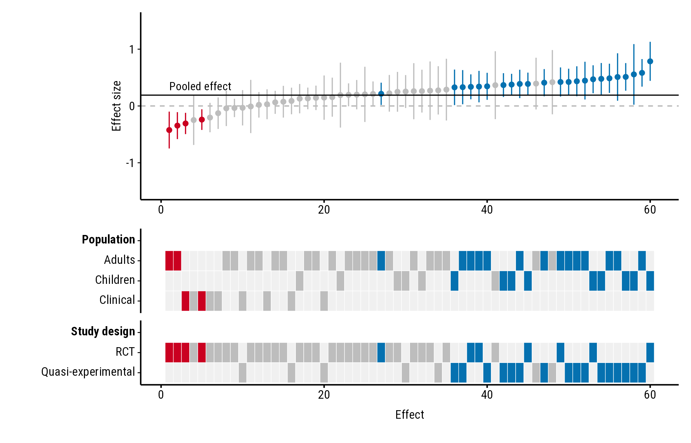
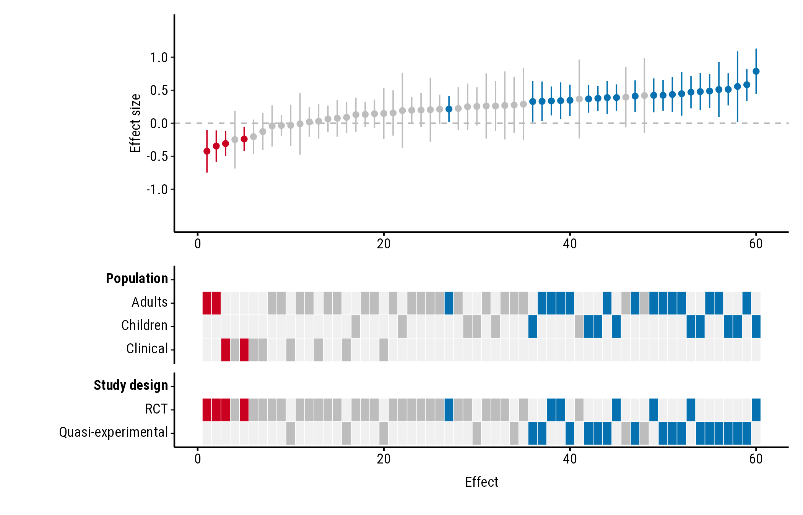

The plot is made with ggplot2 and patchwork, so you can add titles,
lines and scales of your own. This page also shows how to save it. All
the examples use the forestmap_example data that comes with
the package.
Adding to the plot
plot_forestmap() returns a patchwork of ggplot2
plots: p[[1]] is the forest plot and p[[2]]
the heatmap. (With continuous_range = "legend",
p[[3]] holds the legends.) You can add to either one.
Title and caption
p <- plot_forestmap(
forestmap_example, "smd", vi = "vi",
moderators = c("Population" = "population", "Study design" = "design")
)
p + patchwork::plot_annotation(
title = "Effects of the intervention",
subtitle = "60 studies, sorted by effect size",
caption = "Simulated data"
)
Show the pooled effect
Add a line to the forest plot, for example at the pooled effect from your meta-analysis. Here it’s a simple inverse-variance (fixed-effect) average:
pooled <- weighted.mean(forestmap_example$smd, w = 1 / forestmap_example$vi)
p <- plot_forestmap(
forestmap_example, "smd", vi = "vi",
moderators = c("Population" = "population", "Study design" = "design")
)
p[[1]] <- p[[1]] +
ggplot2::geom_hline(yintercept = pooled, colour = "black", linewidth = 0.4) +
ggplot2::annotate(
"text", x = 1, y = pooled, label = "Pooled effect",
hjust = 0, vjust = -0.6, size = 3, family = "Roboto Condensed"
)
p
Text added with annotate() doesn’t pick up the plot’s
font automatically, so set family to the font the plot uses
("Roboto Condensed" unless you chose another).
Axis breaks
Change where the y-axis labels go with
scale_y_continuous(). Use round numbers; seq()
can create tiny rounding errors that show up as odd labels:
p <- plot_forestmap(
forestmap_example, "smd", vi = "vi",
moderators = c("Population" = "population", "Study design" = "design")
)
p[[1]] <- p[[1]] + ggplot2::scale_y_continuous(breaks = c(-1, -0.5, 0, 0.5, 1))
p
Saving
plot_forestmap() doesn’t save anything; use
ggplot2::ggsave() and choose the size there. The plot looks
best at around 7 × 5 inches with four properties; add height as you add
rows.
ggplot2::ggsave("forestmap.png", p, width = 7, height = 5.25, dpi = 300)
ggplot2::ggsave("forestmap.svg", p, width = 7, height = 5.25)
ggplot2::ggsave("forestmap.pdf", p, width = 7, height = 5.25, device = cairo_pdf)For PDFs, use device = cairo_pdf. PDFs (and RStudio’s
Plots pane) only see fonts installed on your computer, so install Roboto
Condensed (from
system.file("fonts", package = "forestmap")) or choose an
installed font. In RStudio you can instead set Tools > Global
Options > General > Graphics > Backend to
AGG.